Inteligencia Artificial
Claudio Vaucheret
Búsqueda Adversaria
Created: 2022-09-27 mar 09:49
Table of Contents
Introducción
Juegos
| 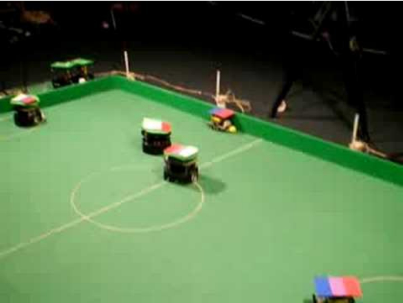 Fútbol | 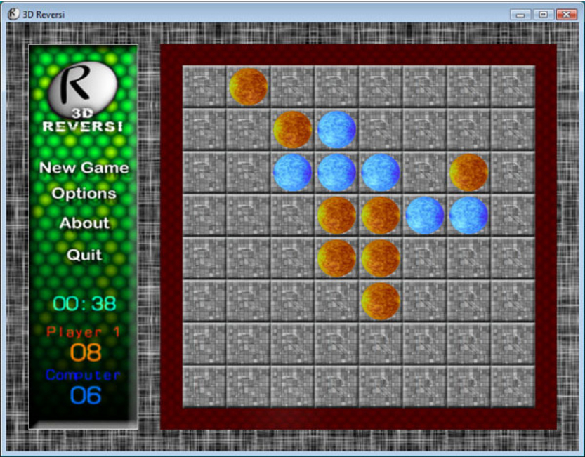 Reversi |
| 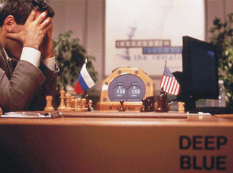 Ajedrez | Truco |
Juegos
Definición
Un juego consiste en un conjunto de reglas que rigen una situación competitiva en la cual dos o más agentes eligen estrategias diseñadas para maximizar sus propias ganancias o para minimizar las ganancias de sus oponentes.
Las reglas especifican las acciones posibles de cada jugador, la cantidad de información recibida por cada uno de ellos mientras se juega y la cantidad de ganancia o pérdida en varias situaciones.
Tipos de Juegos
| JUEGOS | Determinísticos | Con Azar |
| Información Perfecta | Tic-tac-toe, Damas, Revesi, Ajedrez | Backgammon, Monopolio |
| Información Imperfecta | Batalla Naval | Poker |
Características de los Juegos
- Dos jugadores o agentes.
- Movimientos intercalados. Cada decisión es hecha en forma secuencial (no hay movimientos simultáneos).
- Suma Cero: la ganancia de uno es la pérdida del otro.Por ejemplo, en el ajedrez uno gana (1) y el otro pierde (-1); o bien empatan (0).
- No interviene el azar: por ejemplo, dados.
- Información Perfecta: ambos jugadores tienen acceso a toda la información sobre el estado del juego. No se ocultan información uno al otro.
No Suma Cero: Dilema del Prisionero
Enunciado Clásico
La policía arresta a dos sospechosos. No hay pruebas suficientes para condenarlos y, tras haberlos separado, los visita a cada uno y les ofrece el mismo trato. Si uno confiesa y su cómplice no, el cómplice será condenado a la pena total, diez años, y el primero será liberado. Si uno calla y el cómplice confiesa, el primero recibirá esa pena y será el cómplice quien salga libre. Si ambos confiesan, ambos serán condenados a seis años. Si ambos lo niegan, todo lo que podrán hacer será encerrarlos durante seis meses por un cargo menor.
No Suma Cero: Dilema del Prisionero
Resumiendo:
| Tú confiesas | Tú lo niegas | |
| Él confiesa | Ambos son condenados a 6 años | Él sale libre y tu eres condenado a 10 años |
| Él lo niega | Él es condenado a 10 años y tú sales libre | Ambos son condenados a 6 meses |
Juegos
| Teoría de los Juegos | Terminología en IA |
| Dos jugadores | Dos agentes |
| Determinísticos | Determinísticos |
| Por turnos alternados | Acciones por turnos alternados |
| Información Perfecta | Totalmente observable |
| Suma a cero | Valores de Utilidad iguales y opuestos |
Juegos como Búsqueda
Formalización como un problema de búsqueda
- Nodo Inicial: incluye la posición inicial del juego y determina el jugador que va a mover.
- Función Sucesor: indica los movimientos legales desde un estado y el estado resultante luego de jugar esa jugada.
- Test Terminal: determina cuando terminó el juego (estados terminales).
- Función de Utilidad: Da valores numéricos a los estados terminales. Recordemos la condición de suma cero.
Formalización como un problema de búsqueda
Árbol de Juego
- El estado inicial y los movimientos legales definen el árbol de juego para un juego.
- Cada nivel del árbol corresponde a las jugadas de uno de los participantes. Llamaremos a los jugadores MAX y MIN.
- Consideramos un turno completo cuando ambos jugadores han jugado. En el árbol del juego, se consideran dos niveles de profundidad un turno.
Solución Óptima
En un problema de búsqueda, la solución óptima) es una secuencia de movimientos que lleva desde el estado inicial del juego a un estado meta (estado terminal) ganador.
Formulación como un Problema de Búsqueda
Ajedrez
- Estado Inicial Tablero con las piezas ubicadas en la posición inicial. Jugador que comienza: el que juega con piezas blancas.
- Función sucesor Dado un tablero legal y un jugador por jugar, se determinan todos los movimientos legales que ese jugador puede hacer.
- Test de terminación Determinamos si es jaque mate o tablas.
- Función utilidad: Puede ser:
- +1, -1, 0
Formulación como un Problema de Búsqueda
Tic-Tac-Toe
- Estado Inicial Tablero \(3\times 3\) vacío.
- Función sucesor Inicialmente juega uno de los jugadores con X y puede ubicarla en cualquier cuadro. Dado un tablero legal y un jugador por jugar, el tablero resultante es aquel en el que el jugador puso una ficha suya en un cuadrado vacío.
- Test de terminación Hay tres fichas iguales en línea o bien el tablero no contiene cuadros vacíos.
- Función utilidad:
- Gana: +1
- Pierde: -1
- Empatan: 0
Espacio de búsqueda
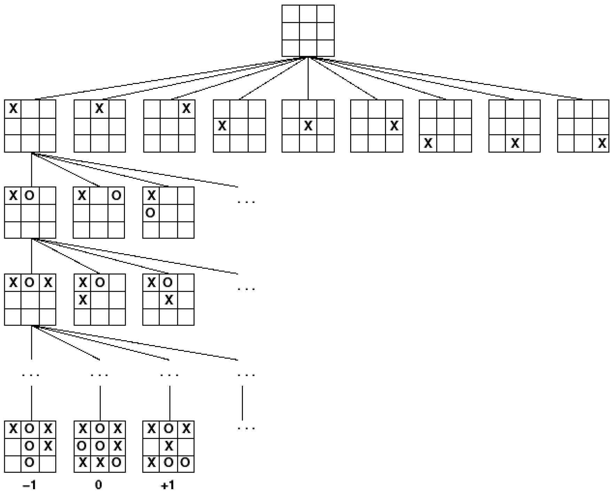
MINIMAX
Algoritmo Minimax
Dos jugadores MAX (\(\triangle\)) y MIN(\(\triangledown\)).
Idea
El jugador MAX juega a la posición de máximo valor, mientras que MIN prefiere el estado de menor valor. Recordar que los valores están dados para MAX, así un valor malo para MAX es bueno para MIN.
Algoritmo Minimax
Idea
El jugador MAX juega a la posición de máximo valor, mientras que MIN prefiere el estado de menor valor. Recordar que los valores están dados para MAX, así un valor malo para MAX es bueno para MIN.
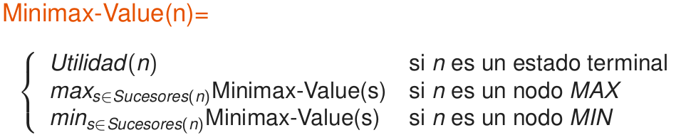
Algoritmo Minimax
- El recorrido del árbol de búsqueda es Depth-First.
Se debe calcular el valor de minimax de cada nodo recursivamente
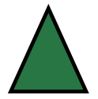 Nodo Max Nodo Min
Espacio de búsqueda
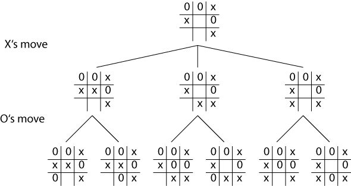
Espacio de búsqueda
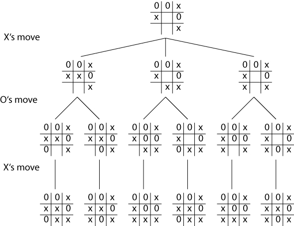
Espacio de búsqueda
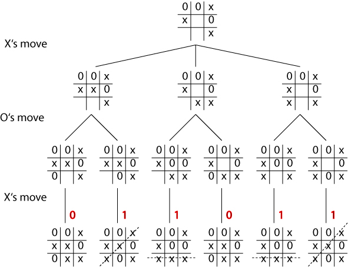
Espacio de búsqueda
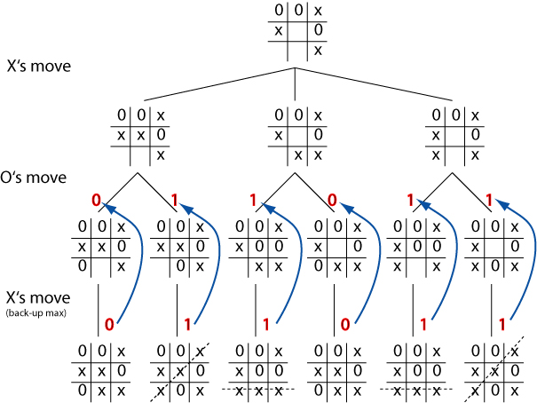
Espacio de búsqueda
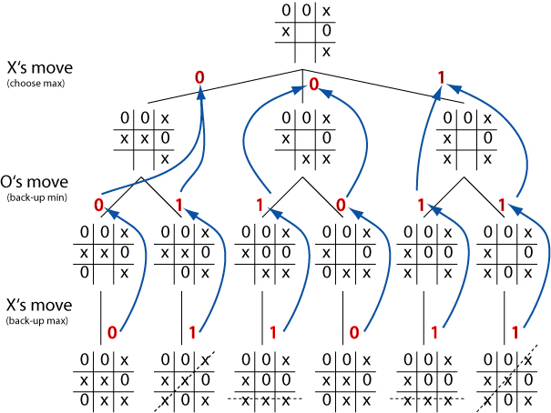
Propiedades de Minimax
Asumimos una profundidad máxima del árbol de \(m\) y que el juego tiene \(b\) movimientos legales en cada nodo (ramificación). Recordemos que el recorrido es Depth-First.
- ¿Completo? Solo si el árbol es finito.
- ¿Complejidad Temporal? \(O(b^m)\).
- ¿Complejidad Espacial? \(O(bm)\).
- ¿Óptimo? Si, contra un oponente óptimo.¿De lo contrario?
Alpha-Beta
Minimax
Para el ajedrez tenemos una profundidad \(m\approx 100\) y una ramificación \(b\approx 35\).
El tiempo estimado es \(35^{100}\).
¡HMMMMMMMMMMMM! :(
Solución exacta NO viable completamente con Minimax.
Pensemos...
¿Será necesario explorar todos los caminos?
Poda Alpha-Beta
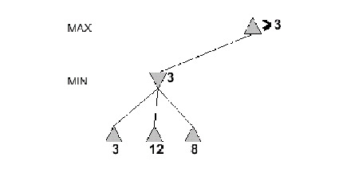
Poda Alpha-Beta
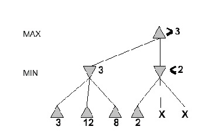
Poda Alpha-Beta
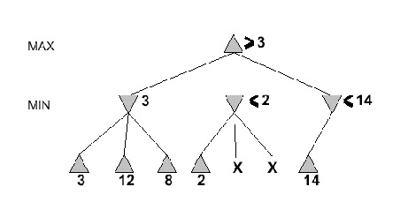
Poda Alpha-Beta

Poda Alpha-Beta
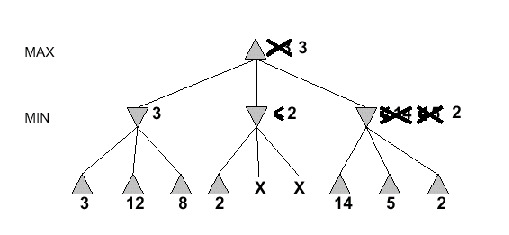
Alpha-Beta
- La poda NO afecta el resultado final.
- Un buen orden de los movimientos mejora la efectividad de la poda.
- Con un "orden perfecto", la complejidad en tiempo es \(O(b^{m/2})\), a diferencia del Minimax \(O(b^m)\).
Poda Alpha-Beta
- \(\alpha\): es el valor de la mejor elección (valor más alto) que hemos encontrado hasta ahora para MAX. Inicialmente en \(-\infty\).
- Si estamos analizando un nodo MIN y su valor \(V_{Min}\leq \alpha\), PODA, ya que MAX no lo tendrá en cuenta.
- \(\beta\): es el valor de la mejor elección (valor más bajo) que hemos encontrado hasta ahora para MIN. Inicialmente en \(+\infty\).
- Si estamos analizando un nodo MAX y valor \(V_{Max}\geq \beta\), PODA, ya que MIN no lo tendrá en cuenta.
Algoritmo \(\alpha-\beta\)
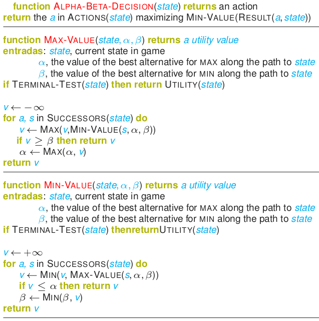
Tiempo Real
Toma de decisiones en tiempo real
- En un juego, el tiempo para "pensar" la siguiente movida es limitado.
- Las personas no deseamos esperar mucho tiempo para que nuestro contrincante realice su movida.
Solución
- Cortar el recorrido del espacio de juego antes de llegar a la hojas, convirtiéndo ese nodo interno en hoja y utilizar una función de evaluación (medida heurística de utilidad) del nodo.
- Implementar un test de corte (Cutoff test) que nos determina cuando usamos la función de evaluación.
Función de Evaluación
Valor estimado de la utilidad esperada del juego desde un nodo La performance del juego dependerá de la calidad de la función de evaluación. Una función de evaluación imprecisa guiará al agente a una posición perdedora.
Características de diseño:
- Coincida con la función de utilidad en los nodos terminales.
- Su cálculo no sea costoso ni en tiempo ni espacio.
- Refleje de la forma más precisa las chances de ganar por ese camino.
Función de Evaluación
¿Cómo diseñamos una función de evaluación?
- El diseño de la función depende de la identificación de características que distinguen a los estados.
- Por ejemplo: en el ajedrez podría ser número de piezas blancas y negras, si tiene la reina blanca, si tiene la reina negra, etc.
Test de Corte
Enfoque Simple
Límite de profundidad para la búsqueda
Si Cutoff-Test(state, depth) entonces return Eval(state)
Problemas
- El corte podría ser aplicado a nodos que parecieran ser prometedores para un jugador A aunque en la siguiente jugada, quedara claramente mostrado que es perdedor para el jugador A.
- Puede detenerse antes que el tiempo disponible sea usado.
Se requiere de alguna mejora…
Test de Corte
Problemas
- El corte podría ser aplicado a nodos que parecieran ser prometedores para un jugador A aunque en la siguiente jugada, quedara claramente mostrado que es perdedor para el jugador A.
- Puede detenerse antes que el tiempo disponible sea usado.
Búsqueda en Reposo
El corte se aplica sólo a nodos en reposo, es decir a aquellos que tienen poca probabilidad de oscilar bruscamente, según la función de evaluación, en el futuro cercano.
Efecto Horizonte
Idea
Ocurre cuando los movimientos del oponente causan un daño serio que es inevitable, pero que puede ser evitado temporalmente retrasado la táctica.
Conclusiones
Resumen
- Algunos juegos pueden ser representados como problemas de búsquedas
- Arbol de juego
- Algoritmo Minimax
- Asume que el oponente juega de manera óptima
- Definiendo la función de utilidad
- Las podas pueden reducir el espacio de búsqueda drásticamente
Resumen
- Los juego en tiempo real requiere cutoffs
- Necesita definir una medida de utilidad heurística: función de evaluación
- Función de evaluación puede ser derivada de simulaciones, análisis, experiencias
Bibliografía
Referencia Bibliográfica
 S. Russell y P.Norvig
Artificial Intelligence: A Modern Approach (Third Edition).
Capítulo 5
2009
S. Russell y P.Norvig
Artificial Intelligence: A Modern Approach (Third Edition).
Capítulo 5
2009